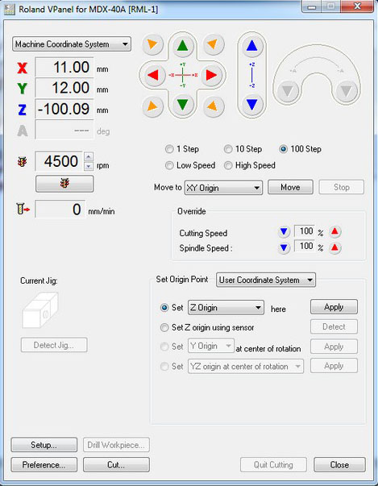

Electronics Production
Week 4
Electronics Production
Tasks
Individual assignment:
make an in-circuit programmer by milling the PCB, then optionally trying other processes
Preparing the Roland Modela mdx-40a
We started this week looking at the forth axis installed on our modela and removing it. We had to level the plate for better milling results. We cutted 305mm square of a 8mm acrylic in the lasercut and milled 0.5mm depth with a 6mm end mill at 0.6mm of stepdown, 7500RPM, 2.6mm of stepover with a 40mm/sec feedrate. Next time we'll reduce the stepover for smoother results. Next time i'll also change the clearance for the screws. I made a 5mm clearance in the material and only left 3mm to support tha screws, and it stayed too fragile. I think a 3mm area are enough for hiding the screws from the milling surface.
Modela MDX 40A Fourth AxisWorking with Artcam in the modela
Final Result
FILES
Artcam file
Plate Vector File
{kind=link}
References - Roland Modela MDX-40A manual,
PCB Fabrication
I choose Brian "FabTinyISP Minimal", a Bas Zaerc's ISP with few modifications tutorial. I choose this because i liked its shape, and in our group we decided to make 2 diferent FabISP's. After reading a while i come to some conclusions:
Less components needed
The LEDS facilitate usage
Easy way of removing the bridge/jumpers
Practical use in USB slot
I started by downloading the traces and the outline cutout. I used Fabmodules HTML5 to get the clearance an cutting paths. Here are the steps i followed:
input format --> image (.png) --> select the png file
output format --> Rolland mill (.rml)
Process --> PCB Traces (1/64)
Then i changed a few parameters, as seen on the picture below, for better results. I changed the zhome (mm): to 6mm for the jog in the end of the milling go up for a safe Z of 6mm, otherwise the PCB could get damaged.
Parameters for Fabmodules
0.25mm V Cut PCB Carbide End Mill (very nice results)
I grabed a PCB board and attach it to the plate using double sided Adhesive tape. Then i had to set the origins in the modela Vpanel. The X and Y are easier to define, but the Z axis is a bit more complicated. I used a paper and changed the speed of the motor to 1 step at a time until i reached the paper and i couldn't move it more. When it stucks, the Z oringin is set!
Sticking to the boardAttaching to the plate
Seting Z origin with paper
Using Roland Vpanel

Next step was to cut the board. I used the cuting png and in fabmodules:
input format --> image (.png) --> select the cutting png file
output format --> Rolland mill (.rml)
Process --> PCB Outline (1/32)
I changed a few parameters again, because my board was thicker (2mm) and reduced the stepdown to 0.25mm. i used a 0.8mm endmill. It did a nice cut. I could see that it was cut because of the remains of the adhesive tape sticked to the mill.
Here is the final result of my PCB after using a knife to recude the copper remains in the board.
Final ResultNext i had to gather all the components to start and do the weldings. It was a bit more complicated because the components were arriving to the Lab and we had to pack properly all of them.
A bit of a messFinal Packing Result
My components ready
I started the welding process with calm and with precision the first components started to appear in the board. I took a break after 15 minutes of welding to relax hands and muscles, i suggest you do it too.
First components weldedI used a bit of welding paste, because some of the copper tracks were really thin. I was also helped by using the schematic and board images that i printed
Schematic pictures helping the welding processWelding with the help of a friends hand (tweezers)
Final Result
Analysing the board through a magnifying glass
Next step is to program the board. I've already did some tests and the LED turned on!
Debugging the boardRed LED On!
I'm going to machine this board in vectors using my CAM software to test the final result and the diference between the 2 processes.
FILESBoard Vector File
{kind=link}
Roland Modela Clearance File
Roland Modela Cuting File